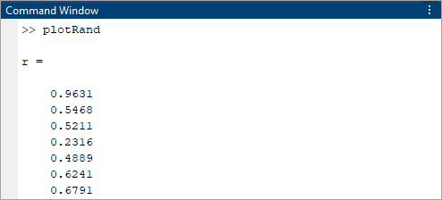
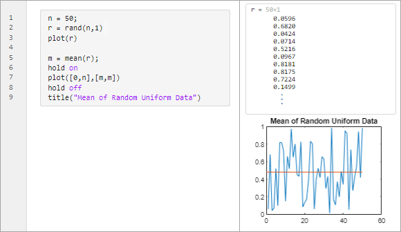
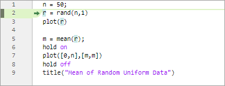
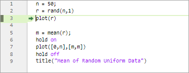
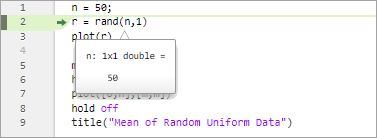
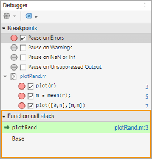
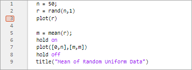
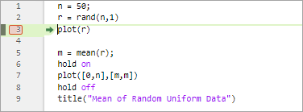

Debug MATLAB Code Files
You can diagnose problems in your MATLAB® code files by debugging your code interactively in the Editor and Live Editor or programmatically by using debugging functions in the Command Window.
There are several ways to debug your code:
Display output by removing semicolons.
Run the code to a specific line and pause by clicking the Run to Here button
 .
.Pause a long-running file by clicking the
 Pause button.
Pause button.Step into functions and scripts while paused by clicking the Step In button .
Add breakpoints to your file to enable pausing at specific lines when you run your code.
Before you begin debugging, to avoid unexpected results, save your code files and make sure that the code files and any files they call exist on the search path or in the current folder. MATLAB handles unsaved changes differently depending on where you are debugging from:
Editor — If a file contains unsaved changes, MATLAB saves the file before running it.
Live Editor — MATLAB runs all changes in a file, whether they are saved or not.
Command Window — If a file contains unsaved changes, MATLAB runs the saved version of the file. You do not see the results of your changes.
Display Output
One way to determine where a problem occurs in your MATLAB code file is to display the output. To display the output for a line, remove the semicolon from the end of that line. In the Editor, MATLAB displays the output in the Command Window. In the Live Editor, MATLAB displays the output with the line of code that creates it.
For example, suppose that you have a script named plotRand.m
that plots a vector of random data and draws a horizontal line on the plot at the
mean.
n = 50; r = rand(n,1); plot(r) m = mean(r); hold on plot([0,n],[m,m]) hold off title("Mean of Random Uniform Data")
To display the output of the rand function at line 2, remove
the semicolon at the end of the line. MATLAB displays the value of r in the Command
Window.

In the Live Editor, MATLAB displays the value of r with line 2.

Debug Using Run to Here
To explore the state of all variables in the workspace at a specific point in your
code, run your code file and then pause. To run code to a specified line and then
pause, click the Run to Here button  to the left of the line. If the selected line
cannot be reached, MATLAB continues running until it reaches the end of the file or a
breakpoint. In functions and classes, you only can run to a specified line and then
pause when MATLAB is paused.
to the left of the line. If the selected line
cannot be reached, MATLAB continues running until it reaches the end of the file or a
breakpoint. In functions and classes, you only can run to a specified line and then
pause when MATLAB is paused.
Before R2021b: To run to the cursor position and pause
while debugging, go to the Editor tab, and click the Run to
Cursor button  .
.
For example, click the Run to Here button  to the left of line 2 in
to the left of line 2 in
plotRand.m. MATLAB runs plotRand.m starting at line 1 and pauses
before running line 2.

When MATLAB pauses, multiple changes occur:
The Debugger panel opens. (since R2025a)
The
 Run button in the Editor or
Live Editor tab changes to a
Run button in the Editor or
Live Editor tab changes to a
 Continue button.
Continue button.The prompt in the Command Window changes to
K>>indicating that MATLAB is in debug mode and that the keyboard is in control.MATLAB indicates the line at which it is paused by using a green arrow and green highlighting.

Tip
It is a good practice to avoid modifying a file while MATLAB is paused. Changes that are made while MATLAB is paused do not run until after MATLAB finishes running the code and the code is rerun.
The line at which MATLAB is paused does not run until after you continue running the code. To
continue running the code, click the  Continue button. MATLAB continues running the file until it reaches the end of the file or a
breakpoint. You also can click the Continue to Here button
to the left of the line of code that you want to
continue running to.
Continue button. MATLAB continues running the file until it reaches the end of the file or a
breakpoint. You also can click the Continue to Here button
to the left of the line of code that you want to
continue running to.
To continue running the code line-by-line, on the Editor or Live Editor tab, click Step. MATLAB executes the current line at which it is paused and then pauses at the next line.

View Variable Value While Debugging
To view the value of a variable while MATLAB is paused, place your cursor over the variable. The current value of the variable appears in a data tip. The data tip stays in view until you move the cursor.

You also can view the value of a variable by typing the variable name in the
Command Window. For example, to see the value of the variable n,
type n and press Enter. The Command Window
displays the variable name and its value. To view all the variables in the current
workspace, use the Workspace panel.
For more information, see Examine Values While Debugging.
Pause a Running File
You can pause long-running code while it is running to check on the progress and
ensure that it is running as expected. To pause running code, go to the
Editor or Live Editor tab and click
the  Pause button. MATLAB pauses at the next executable line, and the
Pause button. MATLAB pauses at the next executable line, and the
 Pause button changes to a
Pause button changes to a  Continue button. To continue running the code, press the
Continue button. To continue running the code, press the
 Continue button.
Continue button.
Note
When you click the  Pause button, MATLAB might pause in a file outside your own code. In addition, you
might see a significant delay before MATLAB pauses and the
Pause button, MATLAB might pause in a file outside your own code. In addition, you
might see a significant delay before MATLAB pauses and the  Pause button changes to a
Pause button changes to a  Continue button. In some cases, MATLAB might not pause at all. The reason is that MATLAB is unable to pause in some built-in code.
Continue button. In some cases, MATLAB might not pause at all. The reason is that MATLAB is unable to pause in some built-in code.
Step Into Functions
While debugging, you can step into called files, pausing at points where you want
to examine values. To step into a file, click the Step In button
directly to the left of the function or script
that you want to step into. MATLAB displays the button only if the line contains a call to another
function or script. After stepping in, click the Step Out button
 at the top of the file to run the rest of the
called function, leave the called function, and then pause.
at the top of the file to run the rest of the
called function, leave the called function, and then pause.
By default, the Step In button displays only for user-defined functions and scripts. To show the button for all functions and scripts, on the Home tab, in the Environment section, click Settings. Then, select MATLAB > Editor/Debugger, and in the Debugging section, set the Show inline Step In buttons option to Always. To never show the button, set the Show inline Step In buttons option to Never.
Alternatively, you can step in and out of functions while debugging by using the
Step In or  Step Out buttons on the Editor or
Live Editor tab. These buttons do not honor the
Show inline Step In buttons setting and always step in and
out of user-defined and MathWorks® functions.
Step Out buttons on the Editor or
Live Editor tab. These buttons do not honor the
Show inline Step In buttons setting and always step in and
out of user-defined and MathWorks® functions.
Function Call Stack
When you step into a called function or file, the Debugger panel displays the list of the functions it executed before pausing at the current line in the Function call stack section. The list, also called the function call stack, displays the functions in order, with the current script or function in which MATLAB is paused at the top of the list, and the first called script or function at the bottom of the list. (since R2025a)
To open the Debugger panel if it is not open, go to the
Editor or Live Editor tab, and in
the Analyze section, click  Debugger. You also can open the panel using the Open more
panels button
Debugger. You also can open the panel using the Open more
panels button  on a sidebar.
on a sidebar.

For each function in the function call stack, there is a corresponding workspace. Workspaces contain variables that you create within MATLAB or import from data files or other programs. Variables that you assign through the Command Window or create by using scripts belong to the base workspace. Variables that you create in a function belong to their own function workspace. To examine the values of variables outside of the current workspace, select the corresponding function in the Debugger panel Function call stack section. For more information, see Examine Values While Debugging.
Before R2025a: The function call stack is shown at the top of the file and displays the functions in order, starting on the left with the first called script or function, and ending on the right with the current script or function in which MATLAB is paused.
Add Breakpoints and Run Code
If there are lines of code in your file that you want to pause at every time you run your code, add breakpoints at those lines. You can add breakpoints interactively by using the Editor and Live Editor, programmatically by using functions in the Command Window, or both.
There are three types of breakpoints: standard, conditional, and error. To add a
standard breakpoint in the Editor or Live Editor, click the line number (or the gray
area if line numbers are not visible) to the left of the executable line where you
want to set the breakpoint. For example, click line number 3 in
plotRand.m to add a breakpoint at that line.

When you run the file, MATLAB pauses at the line of code indicated by the breakpoint. The line at which MATLAB is paused does not run until after you continue running your code.
For example, with the plotRand.m file open in the Editor, click
the  Run button in the Editor tab.
MATLAB runs
Run button in the Editor tab.
MATLAB runs plotRand.m starting at line 1 and pauses
before running line 3.
When MATLAB pauses, multiple changes occur:
The Debugger panel opens. You can use the Debugger panel to manage the breakpoints in all open MATLAB code files. (since R2025a)
The
Run button in the Editor or
Live Editor tab changes to a
Continue button.The prompt in the Command Window changes to
K>>indicating that MATLAB is in debug mode and that the keyboard is in control.MATLAB indicates the line at which it is paused by using a green arrow and green highlighting.

Tip
It is a good practice to avoid modifying a file while MATLAB is paused. Changes that are made while MATLAB is paused do not run until after MATLAB finished running the code and the code is rerun.
To continue running the code, click the  Continue button. MATLAB continues running the file until it reaches the end of the file or a
breakpoint. To continue running the code line-by-line, on the
Editor or Live Editor tab, click
Step. MATLAB executes the current line at which it is paused and then pauses at the
next line.
Continue button. MATLAB continues running the file until it reaches the end of the file or a
breakpoint. To continue running the code line-by-line, on the
Editor or Live Editor tab, click
Step. MATLAB executes the current line at which it is paused and then pauses at the
next line.
For more information about the different types of breakpoints and how to set, clear, and disable them, see Set Breakpoints.
Manage Breakpoints in Debugger Panel
Since R2025a
You can use the Debugger panel to manage your breakpoints. By default, the
Debugger panel opens automatically when MATLAB enters debug mode. To open the Debugger panel manually, go to the
Editor or Live Editor tab, and in the
Analyze section, click  Debugger. You also can open the panel using the Open more
panels button
Debugger. You also can open the panel using the Open more
panels button  on a sidebar. To hide the Debugger panel, click
the Debugger icon on the sidebar.
on a sidebar. To hide the Debugger panel, click
the Debugger icon on the sidebar.
The Breakpoints section in the panel lists the breakpoints in all your open MATLAB code files. The first four breakpoints in the section, Pause on Errors, Pause on Warnings, Pause on NaN or Inf, and Pause on Unsuppressed Output are error breakpoints. When you enable one of these breakpoints, MATLAB pauses at any line in any file if the error condition specified occurs. The remaining breakpoints are grouped by file.
For each breakpoint in the list, you can perform these actions:
Enable or disable breakpoints.
Clear breakpoints.
Go to breakpoints in file.
Set or modify breakpoint conditions.
To disable opening the Debugger panel automatically, click the Debugger
Configuration  button at the top left of the Debugger panel and
clear the Open Debugger panel automatically option.
Alternatively, you can disable this option in the MATLAB > Editor/Debugger page of the Settings window.
button at the top left of the Debugger panel and
clear the Open Debugger panel automatically option.
Alternatively, you can disable this option in the MATLAB > Editor/Debugger page of the Settings window.
For more information about the different types of breakpoints and how to set, clear, and disable them, see Set Breakpoints.
End Debugging Session
After you identify a problem, to end the debugging session, go to the
Editor or Live Editor tab and click
 Stop. After you end debugging, the usual
Stop. After you end debugging, the usual
>> prompt in the Command Window reappears in place of the
K>> prompt. You no longer can access the function call
stack.
To avoid confusion, make sure to end your debugging session every time you are done debugging. If you make changes to a file and save it while debugging, MATLAB ends the debugging session. If MATLAB becomes unresponsive when it pauses, press Ctrl+C to end debugging.
Debug Using Keyboard Shortcuts or Functions
You can perform most debugging actions by using keyboard shortcuts or by using functions in the Command Window. This table describes debugging actions and the related keyboard shortcuts and functions that you can use to perform them.
| Action | Description | Keyboard Shortcut | Function |
|---|---|---|---|
Continue | Continue running file until the end of the file is reached or until another breakpoint is encountered. | F5 | |
Step | Run the current line of code. | F10 (Shift+Command+O on macOS systems) | |
Step In | Run the current line of code, and, if the line contains a call to another function, step into that function. | F11 (Shift+Command+I on macOS systems) |
|
Step Out | After stepping in, run the rest of the called function, leave the called function, and then pause. | Shift+F11 (Shift+Command+U on macOS systems) |
|
Stop | End debugging session. | Shift+F5 | |
Set breakpoint | Set a breakpoint at the current line, if no breakpoint exists. | F12 | |
Clear breakpoint | Clear the breakpoint at the current line. | F12 |